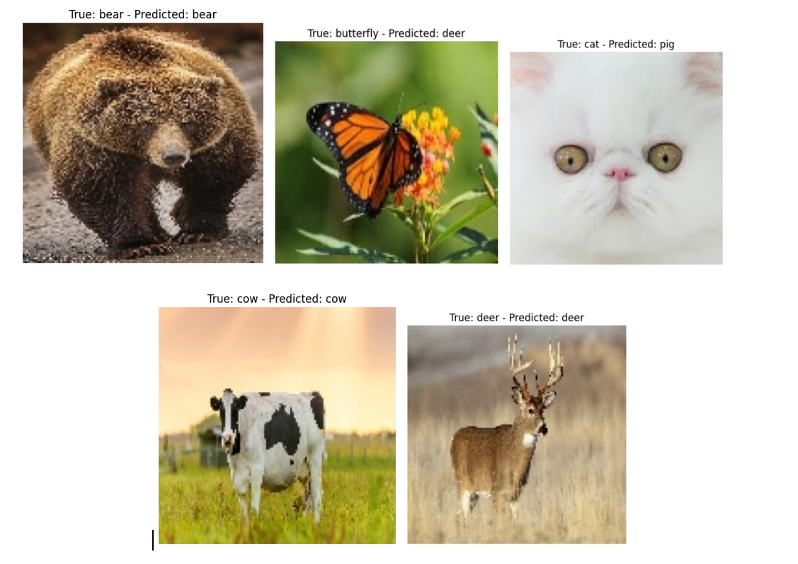
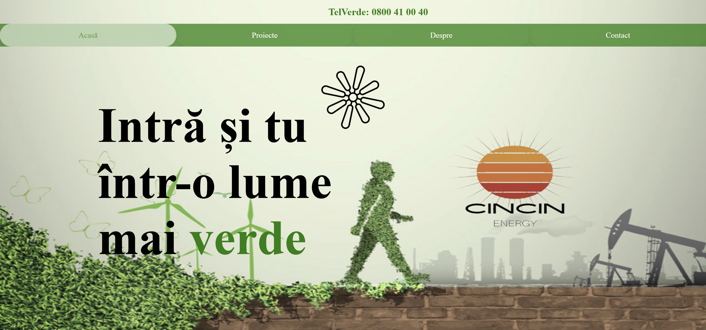

Recent Projects
Restaurant Management System
The project proposes the development of a complete online restaurant management system using Java, Spring Boot, and MySQL. The application is designed to provide a seamless and interactive experience for both regular users, who can order food or make reservations, and administrators, who can manage the menu, orders, users, and reservations.
Car Dealer App
Car Dealer App – Full Stack (React.js & SQL Server) Manages car sales for a dealership.I used Node.js with Express.js to create a backend server. Key features: Cars: Add, update, delete. Clients: Manage client info. Sales: Track sales, associate clients & employees. Search: Filter by brand, find clients by price. Stats: Generate reports on cars, clients, employees, sales.
Cost optimization of transportation with the GPP algorithm
The application consists of calculating the optimal transportation costs of products from the manufacturer to the destination, depending on quantity, supply, and demand.

Machine Learning Techniques Project: Comparative Analysis of Classification Algorithms
Developed a Python-based machine learning project to analyze and compare the performance of three classification algorithms—K-Nearest Neighbors (KNN), K-Means, and Naive Bayes—in identifying 20 categories of animals from an image dataset. Evaluated model effectiveness using confusion matrices and key performance metrics, providing insights into the strengths and limitations of each algorithm. This project highlights my ability to apply machine learning techniques, optimize models, and extract meaningful conclusions from real-world data.
Arduino Car Parking System
The project, implemented on the Arduino UNO board and written in C++, is a simple parking system utilizing two IR Proximity Sensors and a servo motor to control the parking barrier. The purpose of this system is to manage vehicle entries and exits in the parking lot and display the number of available parking slots.
Web Scraping Jobs
In this project, I participated in SEO Research due to my passion for web technologies, and I performed web scraping on the eJobs website to make it easier to track details about each job individually for those interested in finding employment opportunities.I worked in a team and we implemented the app using Python programming language and Selenium for web scraping.
Weather App – Real-Time Weather Information
Developed a web application using HTML, CSS, and JavaScript to fetch and display real-time weather data for any city worldwide. The app integrates with a weather API to provide accurate temperature, humidity, wind speed, and weather conditions. Designed a clean and responsive user interface, ensuring a seamless user experience across devices. This project demonstrates my skills in front-end development, API integration, and UI/UX design.
Flow Manager OOP Project
I developed an app using C++ programming language that allows users to create custom flows for processes they use in their work. As companies go through the digitalization process, they need to move their process to apps that can help them automate and optimize their work.

Weather Application – Real-Time Weather Data with Python & Tkinter
Developed a desktop weather application using Python and Tkinter to provide real-time weather updates for any city. Integrated a weather API to display temperature, humidity, wind speed, and atmospheric conditions in a user-friendly graphical interface. Designed an intuitive and visually appealing UI using Tkinter, ensuring ease of use. This project showcases my expertise in Python programming, GUI development, and API integration.
Arduino-Powered Christmas Tree Light Show
Designed and developed an Arduino-based Christmas tree lighting system that synchronizes festive lights with music. The project utilizes a passive buzzer, a 5V relay, an infrared remote control, and an IR receiver to control the lighting effects dynamically. An LCD display shows the song title in real time, enhancing the interactive experience. This project demonstrates my proficiency in C++ programming, microcontroller integration, signal processing, and hardware interfacing, combining creativity with technical expertise to create an engaging holiday-themed automation system.

Hackathon
I participated in a University activity where I developed my skills in web technologies. I worked in a team to develop a website with the theme 'Green Energy', using HTML, CSS, and JavaScript.
ChatBot App
This app was developed in Kotlin as a team project, aiming to help hose interested in computers learn about the IT industry in an interactive way. Users go through lessons on this topic and are assessed on their acquired knowledge.